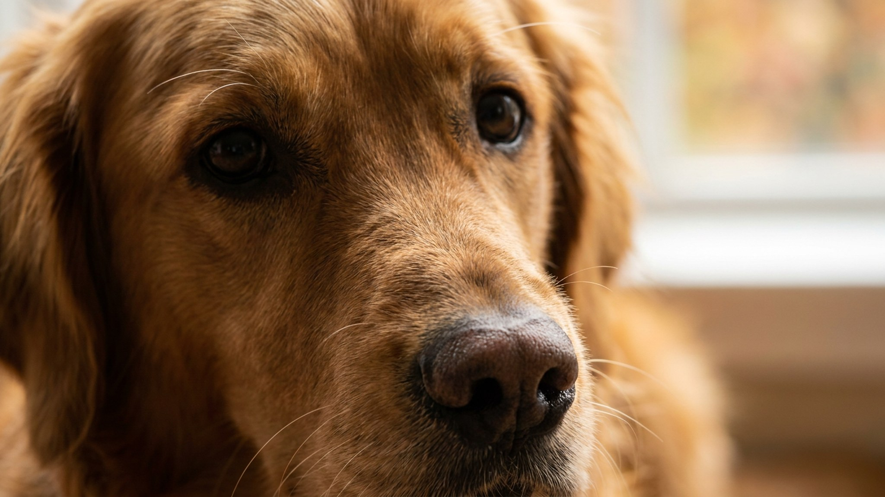

Сентябрь. Собака зашла в лужу, вышла из неё черноногой, и теперь топает по коридору. Это знакомо. Привычка быстро ополоснуть лапы под краном кажется безобидной, но если делать это без учёта нескольких деталей — кожа подушечек постепенно сохнет и трескается. Разбираем, как мыть правильно, когда можно обойтись тряпкой и что проверять после каждой прогулки.
🐾 Заведите дневник ухода за собакой
Вес, шерсть, обработки, прививки — всё в одном месте. А если что-то смущает, AI-ветеринар ответит круглосуточно и бесплатно.
Завести дневник → Завести в MAX →
У вас iPhone? AnimaLife есть в App Store
В сентябре реагентов на дорогах ещё нет — это зимняя история. Осенняя угроза другая: грязь и постоянная сырость. Влага задерживается между пальцами и в складках кожи, не успевает высохнуть между прогулками. Мокрая кожа мягче и уязвимее — мелкие частицы грязи, песок и трава её царапают. Добавьте частые мытья холодной водой и жёсткие полотенца — и к ноябрю подушечки уже шершавые и растрескавшиеся.
Собаки с густой шерстью между пальцами (хаски, самоед, лабрадор) накапливают грязь глубоко в «карманах», где она остаётся влажной часами. Гладкошёрстным немного проще — у них эта область открытая.
Мыть лапы каждый раз не нужно. Если прогулка была по сухому газону или асфальту без луж — хватит чистой тряпки или влажной салфетки без отдушек. Полноценное мытьё нужно после грязи, мокрой земли, луж. Главное правило: если мокро между пальцами — сушим полностью, не оставляем влагу внутри.
Частота мытья с мылом или зоошампунем — не чаще раза в две-три недели. Мыло вымывает натуральную жировую защиту с подушечек быстрее, чем та успевает восстановиться.
Осень — хорошее время начать использовать защитный воск или бальзам для подушечек. Он создаёт тонкий барьер между кожей и влагой, не позволяет коже размокать и трескаться. Средство наносится на чистые сухие лапы, обычно раз в 2-3 дня. Конкретный продукт лучше обсудить с ветеринаром — у некоторых собак есть чувствительность к компонентам.
Шерсть между пальцами стоит подстригать умеренно короткой. Длинная шерсть собирает грязь и дольше сохнет — но бритьё до кожи тоже не нужно, небольшой слой защищает.
Осматривайте лапы регулярно. Вот на что обращать внимание:
Лёгкое загрязнение и сухость — это уход. Но если лапы красные, собака не даёт их осматривать, вылизывает без остановки или вы заметили ранку — это повод обратиться к ветеринару, а не ждать, пока само пройдёт. Раннее обращение проще и дешевле, чем запущенное воспаление.
Материал носит информационный характер и не заменяет очную консультацию ветеринара.
🐾 Чтобы уход не держать в голове
AnimaLife напомнит, когда стричь когти, вычёсывать, купать и обрабатывать от паразитов, и заведёт дневник по вашему питомцу. Бесплатно.
Настроить напоминания → Настроить в MAX →
У вас iPhone? AnimaLife есть в App Store
🐾 Понравился разбор?
Подпишитесь на канал — каждый день разбираем по одному тревожному симптому у кошек и собак: что в пределах нормы, а когда пора к врачу. Подпишитесь, чтобы не пропустить разбор, который может спасти здоровье вашего питомца.